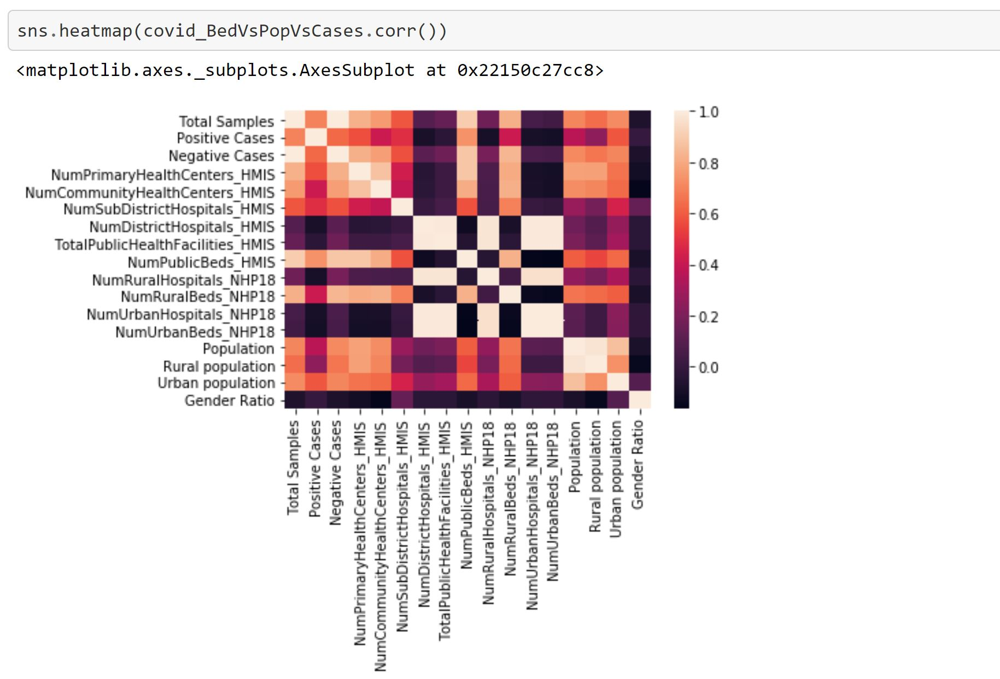
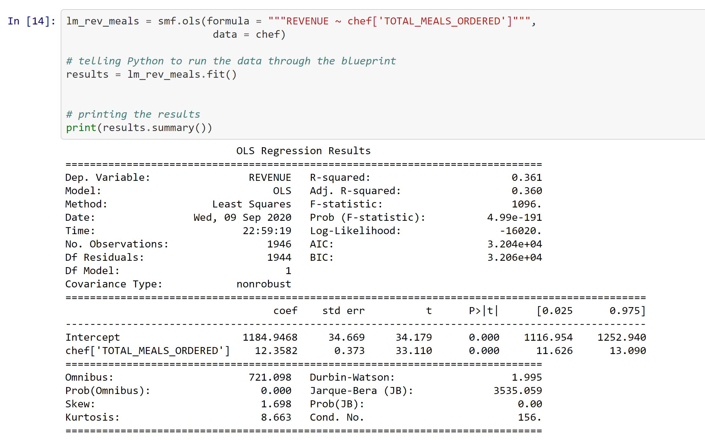
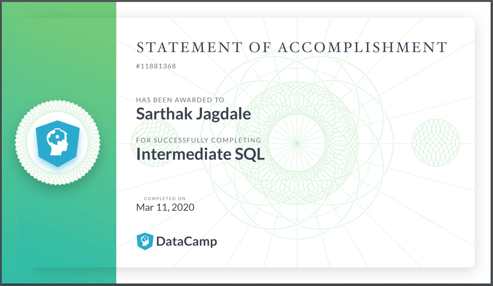

COVID-19 in India: State-Wise Estimates of Current Hospital Beds
Recent study conducted of the number of beds available in healthcare centers across India with respect to covid-19 cases. The Data was retrieved from kaggle.com on 4th of august. The available data onshows testing, number of healthcare centers, and Covid cases until 4th Aug 2020
Cross Selling on Online Delivery
Will the Customers make use of the promotion? As the executives at Apprentice Chef believe this endeavour will create a competitive advantage based on its unique product offering of hard to find local wines. From the model there is an 82% chance of the customers buying the product. Click below to check how?
Unsupervised Machine Learning

This certificate earner has the core skills in Machine Learning using Python. They can readily visualize and summarize unstructured data using Pandas. Using Scikit-learn, the earner can develop Data Pipelines, construct Machine learning models for Regression and evaluate these models.
SQL Certification
This certificate earner has the core skills in SQL using joins and complex queries. They can readily query and visualize structured data using databases. Using Complex joins, the earner can develop Data Pipelines, construct tables for Analysis.